云服务器建站
Create by jsliang on 2018-12-21 13:34:13
Recently revised in 2018-12-23 11:59:40
Hello 小伙伴们，如果觉得本文还不错，记得点个赞或者给个 star，你们的赞和 star 是我编写更多更精彩文章的动力！GitHub 地址
本篇文章重点：
- 云服务器购买及使用
- 域名购买、备案及解析
- Nginx 配置多个二级域名及解析网页
- Node 服务端的部署及 MySQL 的安装
最终效果：
| 目录 | 介绍 |
|---|---|
| jsliang.top | jsliang 的网站列表 |
| cv.jsliang.top | 通过 ECharts + Vue 打造个人线上简历 |
| playregex.jsliang.top | 通过游戏来了解正则表达式 |
| lucky.jsliang.top | 悠闲刮刮乐，仅供娱乐 |
| deadline.jsliang.top | jsliang 的工作时间轴 |
| webpack.jsliang.top | Webpack 学习成果，Webpack 多页面配置 |
| game.jsliang.top | 一个小游戏，只兼容 PC，适配移动端失败 |
| company.jsliang.top | Node 打造企业网站，支持注册、登录及留言 |
| work.jsliang.top | jsliang 工作成果，给领导或者工作小伙伴查看 |
一 目录
不折腾的前端，和咸鱼有什么区别
| 目录 |
|---|
| 一 目录 |
| 二 前言 |
| 三 云服务器及域名 |
| 3.1 云服务器 |
| 3.2 域名 |
| 四 Nginx 代理前端页面 |
| 五 MySQL 安装及部署 |
| 六 Node 提供接口服务 |
| 七 总结 |
二 前言
作为一枚程序猿，
第一句编程必须是 Hello World!，
第一个愿望必须是 My Blog，
如果不是，当我没说。
关于云服务器：
作为一枚能 “折腾” (能作死) 的人，jsliang 玩过腾讯云服务器和阿里云服务器。
- 腾讯云服务器。如果你是大学生，那么腾讯云不可错过，[云+校园]学生云服务器体验套餐 10 元/月。这个活动，其实一开始的价格是 1元/月，1 年也就 12 元，一餐饭的价格都不到，jsliang 用了两年，直至 jsliang 毕业。后来，enm... 你知道的，变成了 10 元/月，腾讯云的意图我就不猜了，一年就是 120 元，云服务器配置是 1 核 2 G + 1 M带宽，对于初学者来说，完全够用了。
- 阿里云服务器。jsliang 目前正在使用的服务器就是云服务器。也许有的小伙伴们应该了解过云服务器，也知道在双 11 双 12 的时候，不仅有疯狂的淘宝购物，还有阿里云服务器的推送，说不定小伙伴已经买了一台给自己了，但是一直没用上。
如果小伙伴需要订购云服务器来存放像 jsliang 个人网站类的静态或者有 Node 后端的网页，但却不知道怎么选择，可以加 jsliang QQ：1741020489 咨询，下面是一些优惠推广：
腾讯云推广：
新用户点这里：

购买云服务器：

阿里云推广：
新用户点这里：

购买云服务器：

购买企业级云服务器：

三 云服务器及域名
云服务器和域名都是需要备案的：阿里云备案管理
小伙伴可以通过上面链接了解下备案相关知识。
3.1 云服务器
如果你已经通过上面推送购买了云服务器，或者你本身就有云服务器，那么我们开始讲解下 jsliang 对云服务器的使用：
我们了解下在哪里可以看到自己的云服务器：
- 在阿里云首页点击控制台。
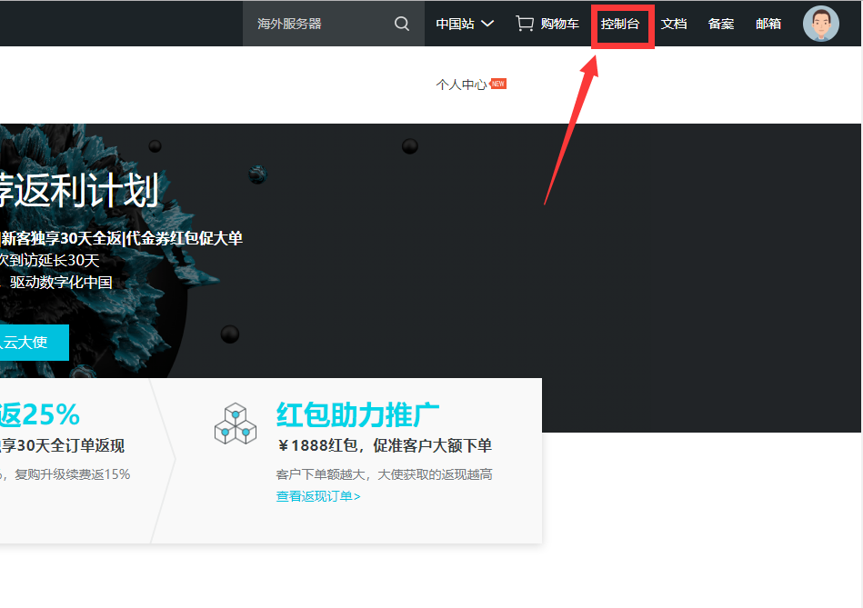
- 点击左侧展开侧边栏，点击云服务器 ECS。
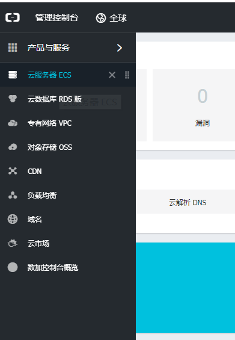
- 点击实例，选择云服务器所在地区，便出现了自己买的云服务器实例。
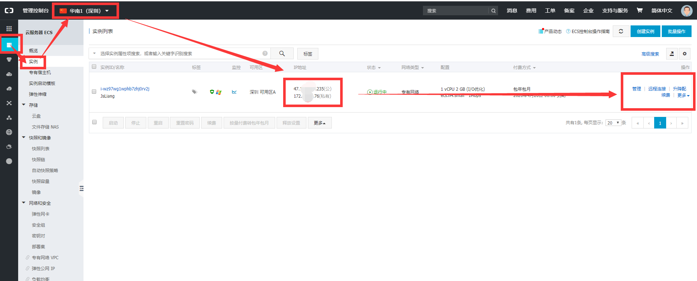
我们需要记住有五大块：
- IP 地址。IP 地址 可以让你通过 Win + R，输入 mstsc 后，在远程桌面中，通过输入公网地址以及密码，访问你的云服务器，方法详情。
- 远程连接。远程连接 可以直接通过网页的形式连接云服务器，对它进行操作。
- 实例状态。更多 -> 实例状态 可以停止、开启、重启云服务器。
- 磁盘和镜像。
- 网路和安全组。点击 更多 -> 网路和安全组 -> 安全组配置 -> 配置规则 -> 添加安全组规则，从而添加 80 端口的安全组。方法详情
这里我们讲解的是 Windows 系统对 Windows 云服务器的操作，因为 Windows 系统方便操作，所以有着其他系统的云服务器的小伙伴，可以考虑将云服务器改成 Windows 系统，或者百度、google 查找其他云服务器的部署方式。
现在，我们讲解了云服务器的基本操作，我们暂且将云服务器这块内容先放一边，讲解下域名部分。
3.2 域名
在你使用域名之前，记得给域名备个案；阿里云备案管理
如果你没有域名，可自行购买：万网域名注册
现在我们进入域名控制台：
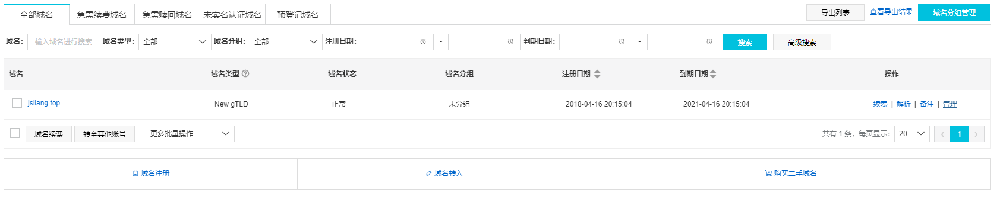
除了备案，其他的都不用理会了，我们直接点击解析：
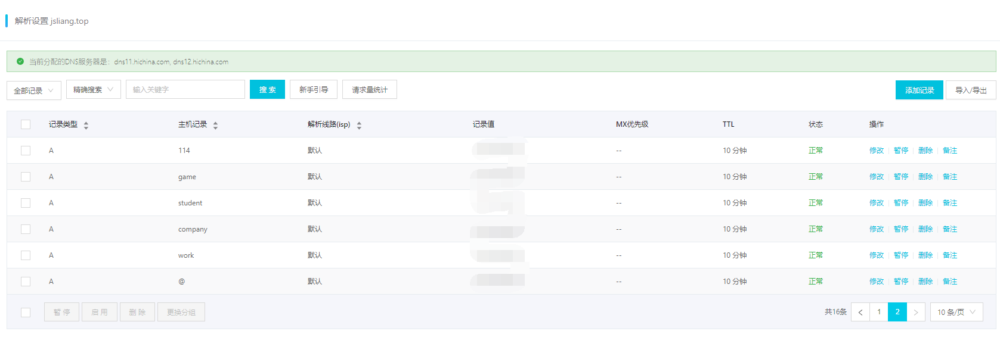
上面的图片中显示的，都是 jsliang 在 jsliang.top 进行的解析记录。其中：
- 主机记录：二级域名开头，例如
company对应的就是http://company.jsliang.top这个二级域名。 - 记录值：就是小伙伴云服务器的公网地址，在上面章节中提到过云服务器的 IP 地址。这是个很重要的玩意，请勿泄露。
很好，现在我们点击 添加记录：
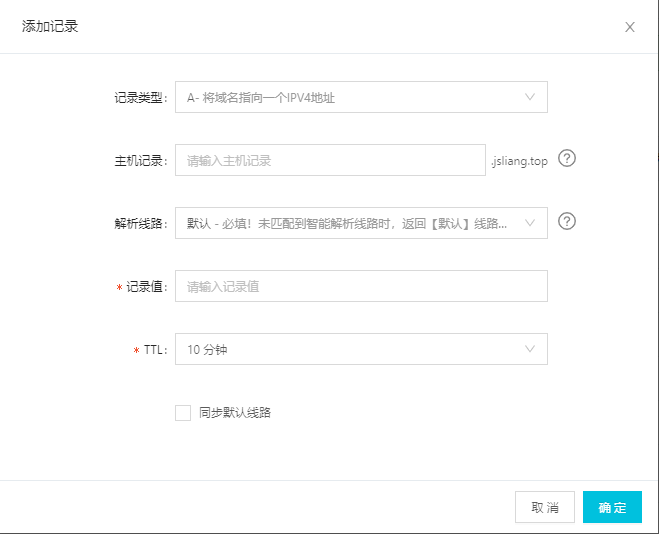
我们只需要填上 主机记录 以及 记录值，然后点击 确定 就可以完成一条二级域名的添加了。
下面会讲解到如何通过云服务器的 Nginx 配置，使二级域名导向服务器中的指定目录。
四 Nginx 代理前端页面
为了保证小伙伴们尽可能地实施顺利，jsliang 对自己的云服务器进行了 重新磁盘化磁盘 的操作，从而减少中间出篓子的可能。
现在我们开始配置 Nginx。
首先，远程连接我们的云服务器。操作方法
云服务器配置：
云服务器操作系统：Windows Server 2008 R2 企业版 64位中文版
开放端口：80、-1、22、3389
然后，我们打开 C 盘，创建这几个目录：
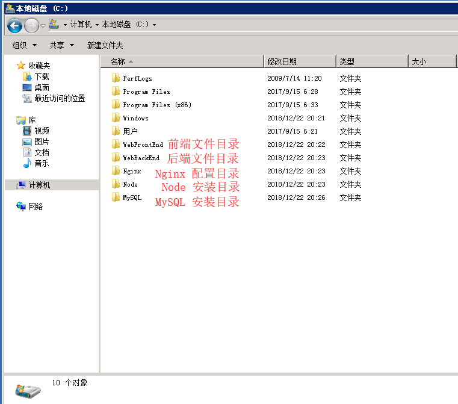
- WebFrontEnd：存放前端文件位置
- WebBackEnd：存放后端文件位置
- Nginx：存放 Nginx 安装目录以及配置
- Node：存放 Node 安装位置
- MySQL：存放 MySQL 安装位置
然后，我们进行 Nginx 的安装及配置：
由于云服务器浏览器时 IE，enm...所以我们本地直接下载吧！
PS：可能这也是我为什么用 Windows 的原因，因为方便复制本机内容粘贴到云服务器上去。
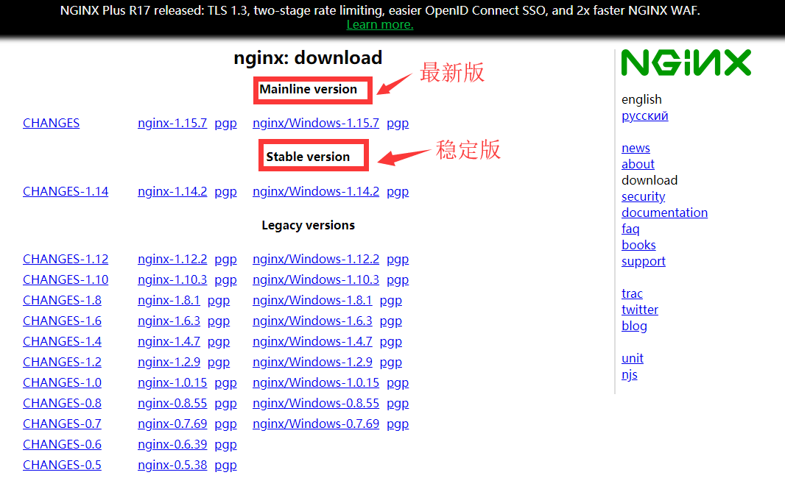
我们下载稳定版本，即 nginx/Windows-1.42.2，它会弹窗让你下载 zip 包，我们先在本机解压配置好，最后再复制到云服务器上的 Nginx 文件目录中。
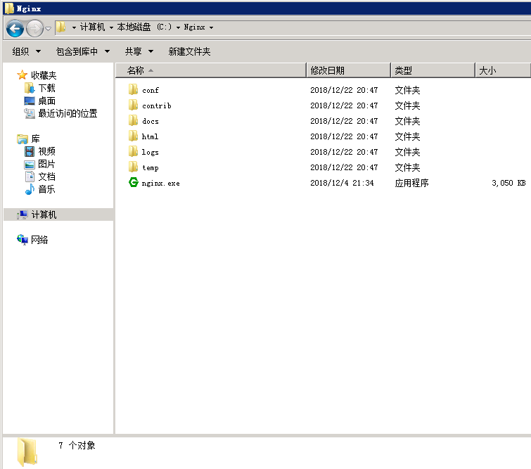
接着，我们进行 Nginx 的配置解析，先在本地熟悉下目录。
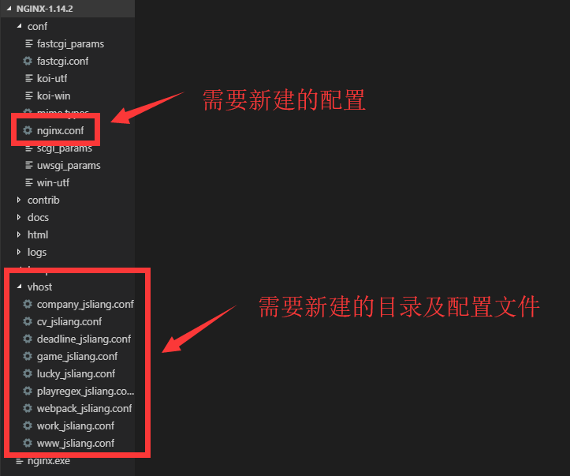
在这里，我们要先了解到：Nginx/conf/nginx.conf 是我们要修改的配置，而 vhost 是我们要新建的目录，目录下就是我们二级域名配置文件，例如 compony.jsliang.top 对应的就是 company_jsliang.conf 文件。
然后，我们打开文件 Nginx/conf/nginx.conf 进行配置，配置的文件已有注释，故这里不再哆嗦：
Nginx/conf/nginx.conf
#user nobody;
# 跟 CPU 有关，不用修改
worker_processes 1;
events {
# nginx 最大负载量
worker_connections 1024;
}
http {
# mime type 映射
include mime.types;
default_type application/octet-stream;
# 启动高效传输文件的模式
sendfile on;
# 长连接 timeout
keepalive_timeout 65;
# http 结构下可以有多个 server。请求进来后，确定哪一个 server 由server_name 决定，这里我们通过 include **文件 来进行多网址配置
server {
# 监听端口
listen 80 default_server;
# 识别的域名
server_name localhost default_server;
# 一个关键配置，与 URL 参数乱码问题有关
#charset utf-8;
root html;
# 监听的文件
location / {
index index.html index.htm;
}
# 404页面
# error_page 404 /404.html;
# 重定向端口错误页面到50*.html页面
error_page 500 502 503 504 /50x.html;
location = /50x.html {
root html;
}
}
# 把其他 server 配置写到其他文件，方便管理
include ../vhost/*.conf;
}
在上面，我们通过最后一句话 include ../vhost/*.conf 可以知道，我们将配置文件放到了 vhost 目录中，从而方便我们下次新增二级域名。
如果小伙伴希望多了解点 Nginx 的知识，可以看下下面的文章。
如果小伙伴们单纯就想快点部署完，请跳过这段话。
- Nginx 多域名配置
- worker_processes：进程数（1）
- worker_connections：最大负载量（1024）
- sendfile：启动高效传输文件的模式（on）
- keepalive_timeout：长连接（65）
- include：（mime.types）
- proxy_pass：要转发的地址（http://www.a.com:3000）
再接着，我们在 Nginx 目录下新建 vhost 目录，然后新增 company_jsliang.conf、work_jsliang.conf ……等目录，命名不重要，好记且它是 *.conf 就行。
*.conf
server {
# 监听的端口，80 即可
listen 80;
# 监听的网址，这里填写你的网址，我的就有 company.jsliang.top 等……请确保该域名已经在阿里云、腾讯云、百度云等进行了域名解析。
server_name company.jsliang.top;
# 监听的目录
root C:\WebFrontEnd\company;
# 监听的文件
location / {
index index.html index.htm;
}
}
看到这个，小伙伴们可能就明白了：当我们访问 company.jsliang.top 时，Nginx 就会监听我们在 C 盘下 C:\WebFrontEnd\company 目录下的 index 或者 index.html 或者 index.htm。
当小伙伴们回想起我们在域名解析时的操作时，会更加清晰：
- 域名解析到公网 IP -> Nginx 监听到了来自浏览器的请求 -> Nginx 查找关于这个请求的配置 -> Nginx 找到这个配置，发现应该定位到 ** 目录 -> Nginx 将信息返回给浏览器。
配置完成后，我们将文件复制并替换到云服务器上去。
记得在 WebFrontEnd 上存放你的前端网页文件喔，要不然最后运行 Nginx 你会发现好像没成功一样~
再然后，我们进入目录 C:\Windows\System32\drivers\etc，修改下 hosts 配置并保存：
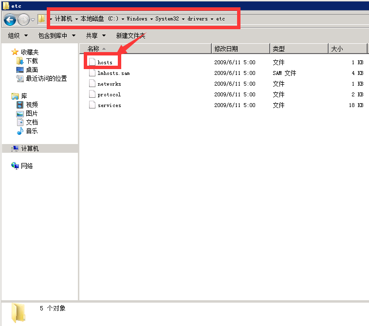
hosts
# Copyright (c) 1993-2009 Microsoft Corp.
#
# This is a sample HOSTS file used by Microsoft TCP/IP for Windows.
#
# This file contains the mappings of IP addresses to host names. Each
# entry should be kept on an individual line. The IP address should
# be placed in the first column followed by the corresponding host name.
# The IP address and the host name should be separated by at least one
# space.
#
# Additionally, comments (such as these) may be inserted on individual
# lines or following the machine name denoted by a '#' symbol.
#
# For example:
#
# 102.54.94.97 rhino.acme.com # source server
# 38.25.63.10 x.acme.com # x client host
# localhost name resolution is handled within DNS itself.
# 127.0.0.1 localhost
# ::1 localhost
127.0.0.1 jsliang.top
127.0.0.1 company.jsliang.top
127.0.0.1 cv.jsliang.top
127.0.0.1 deadline.jsliang.top
127.0.0.1 game.jsliang.top
127.0.0.1 lucky.jsliang.top
127.0.0.1 playregex.top
127.0.0.1 webpack.jsliang.top
127.0.0.1 work.jsliang.top
最后，我们再双击 Nginx 目录中的 nginx.exe，运行 Nginx。
这时候，有的小伙伴可能发现有一个小框一闪而过，然后以为没打开成功？别急，打开 Windows 任务管理器你会发现它已成功运行了。
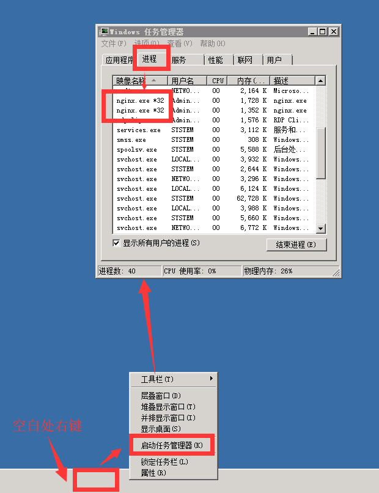
如果小伙伴要新增一个二级域名，那就需要去 Windows 任务管理器将 Nginx 的两个进程结束，新增完毕后再重启 Nginx。
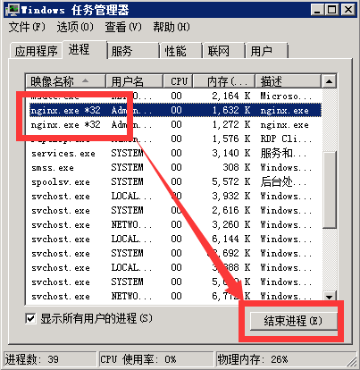
这时候，我们打开 company.jsliang.top 进行查看，发现它已成功部署啦：
后记，附上我学习 Nginx 时的其他参考：
五 MySQL 安装及部署
关于 MySQL 的安装，我在另一篇文章中有记录：
现在，我们直接在本地下载安装包，下载完后直接复制到云服务器上，按照教程一步一步配置即可。
六 Node 提供接口服务
首先，我们下载 Node 的 msi 安装包，并复制到云服务器上：下载地址
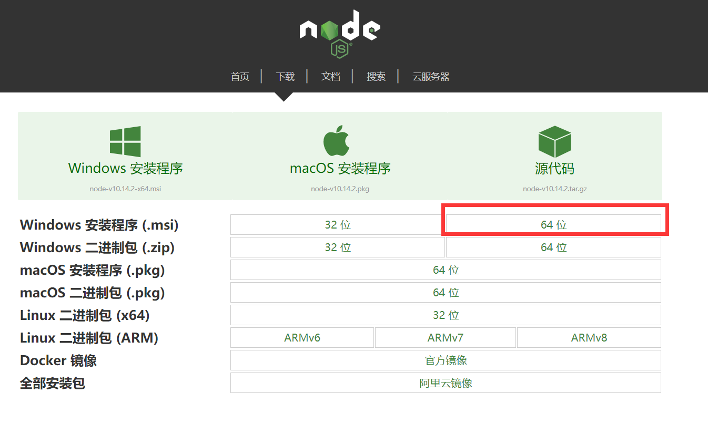
在这里要注意的是，我们下载的是 64 位的 msi 安装包，因为在上面的 Nginx 配置的时候，我们讲过我们的云服务器是 Windows Server 2008 R2 企业版 64位中文版。
我们只需要一路 Next，在配置安装位置的时候，将位置放在我们建好的 Node 目录中即可。
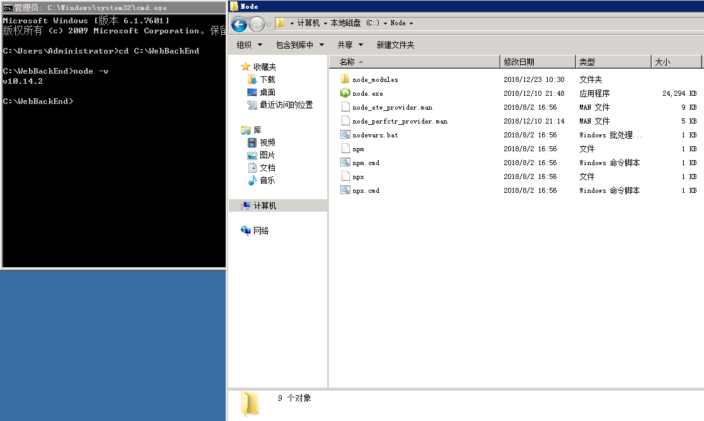
然后，我们通过 win + r -> cmd -> cd C:\WebBackEnd -> node -v 查看我们的 Node 版本，jsliang 这里显示的是 v10.14.2，表明我们安装成功了。。
接着，我们将我们的 Node 代码复制到 WebBackEnd/NodeBase 目录中，同时控制台 cd 到这个目录：cd NodeBase，然后 npm i 安装依赖包，并 node index.js 从而开启项目。
最后，因为我们 Node 项目开启的是 8888 端口，所以我们需要在云服务器的配置规则上配置好 8888 端口：方法详情
至此，我们的 Node 配置完毕并成功开启，如果小伙伴们想知道 Node 如何连接 MySQL、Node 如何使用、cnpm 以及 pm2 是什么，请查看 Node 基础。
记得
npm i安装项目依赖包以及配置云服务器中相关的端口喔~
七 总结
经过一系列的折腾，我们的云服务器终于配置完毕了，接下来就可以愉快玩耍啦~
当然，如果小伙伴嫌自己配置麻烦，可以去阿里云的云服务器市场看看有没有装好的 Node + MySQL 环境喔~
最后叨一句：需要购买云服务器的小伙伴可以咨询我 QQ 1741020489 哈~
jsliang 的文档库 由 梁峻荣 采用 知识共享 署名-非商业性使用-相同方式共享 4.0 国际 许可协议进行许可。
基于https://github.om/LiangJunrong/document-library上的作品创作。
本许可协议授权之外的使用权限可以从 https://creativecommons.org/licenses/by-nc-sa/2.5/cn/ 处获得。